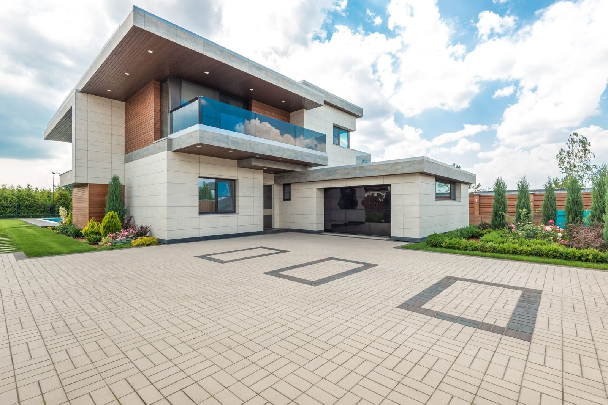
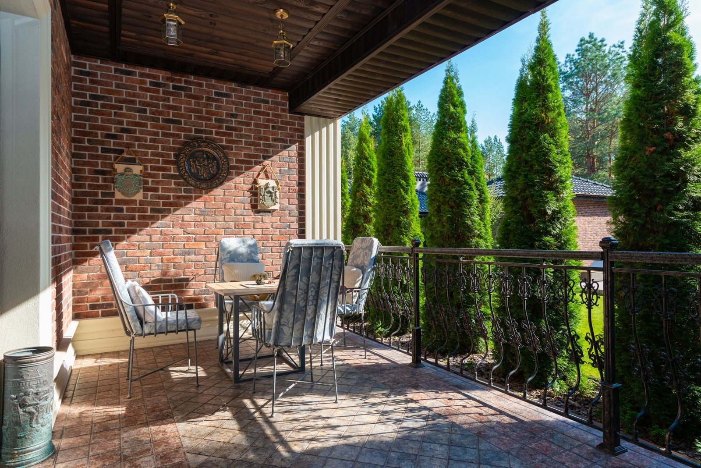
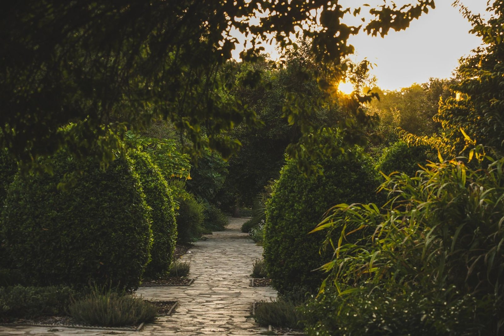

Układamy kostkę brukową od podstaw - z porządną podbudową, spadkami i odwodnieniem, żeby nawierzchnia trzymała się latami i nie zapadała po pierwszej zimie.
Zadzwoń teraz +48 501 102 299Prosty, przewidywalny proces. Bez niespodzianek i bez naciągania.
Przyjeżdżamy, oglądamy, doradzamy. Bez opłat i bez zobowiązań.
Jasna cena i termin na piśmie - zanim cokolwiek ruszy.
Robimy zgodnie ze sztuką i na umówiony czas.
Dajemy gwarancję na robociznę i trzymamy termin.
Zakres prac, jaki robimy najczęściej - pełny opis i wycenę znajdziesz niżej.
Kawałek tego, co robimy na co dzień - podjazdy, tarasy i ścieżki z kostki brukowej. Każda nawierzchnia stoi na porządnie przygotowanej podbudowie.




Bardzo szybka i fachowa robota.Firma godna poleceniaAleksandra Chojnacka
Jak dla mnie wszystko ok. Solidnie, terminowo.Sebastian Szlacheta
Zadzwoń lub napisz - przyjedziemy, obejrzymy i podamy jasną cenę. Bez zobowiązań.